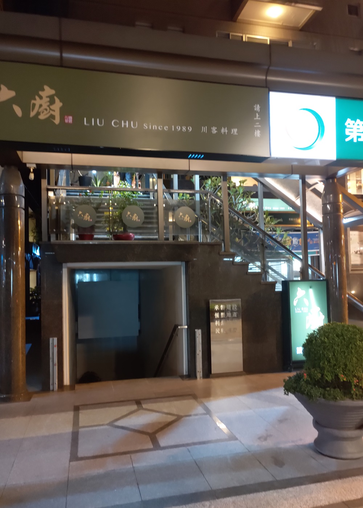
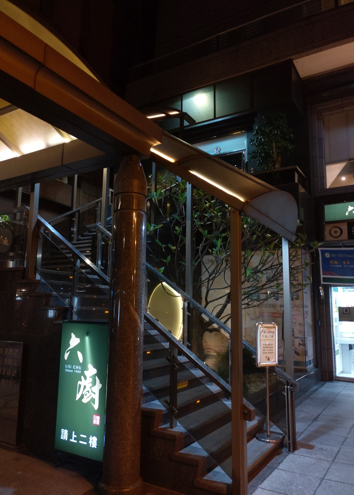
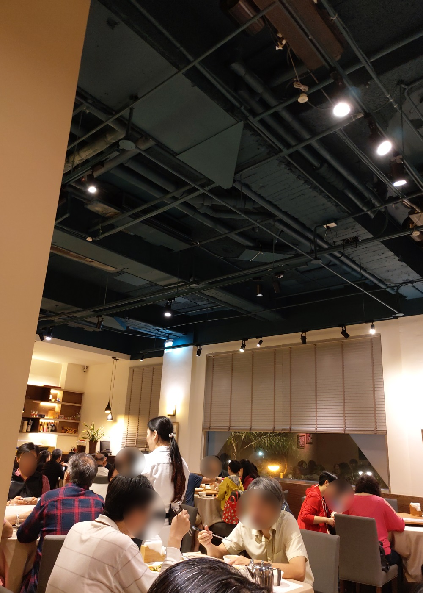
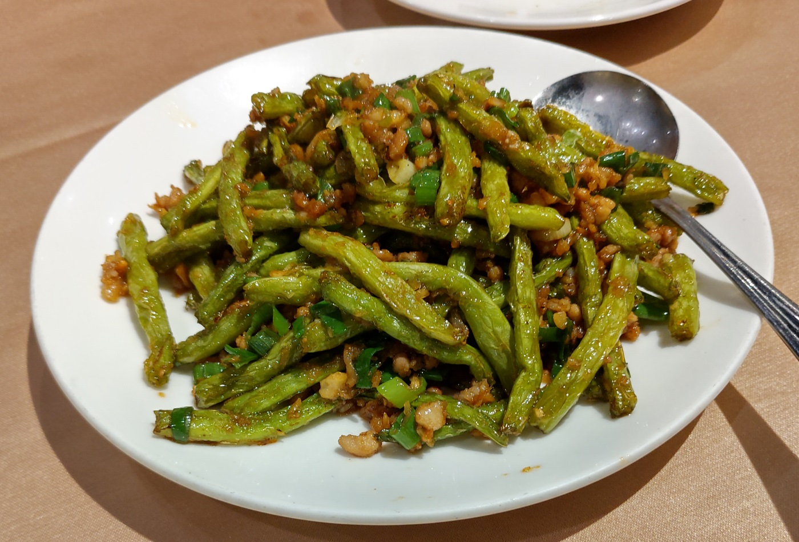
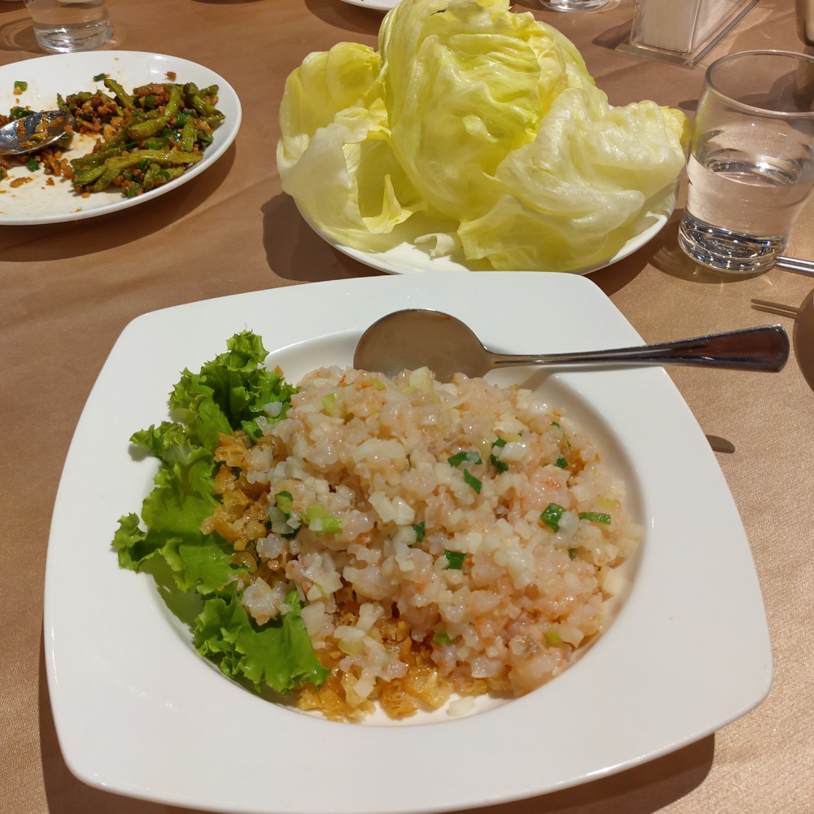
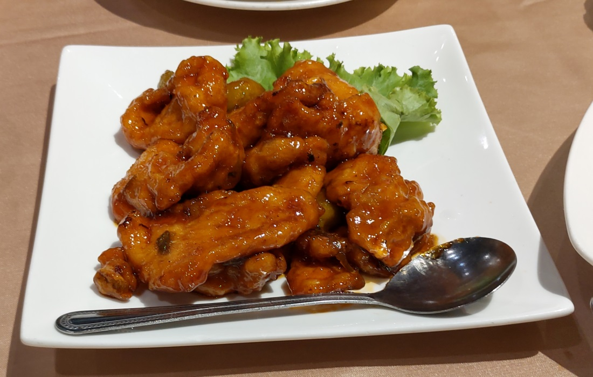
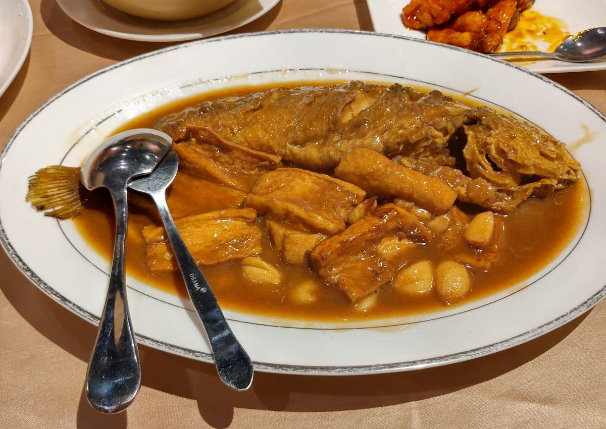
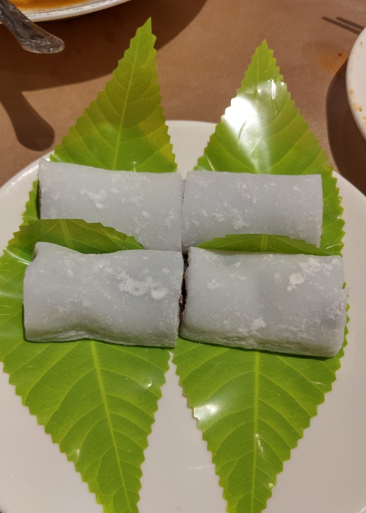

[台北] 六廚川客料理
餐廳名稱: 六廚川客料理
地 址: 台北市大安區信義路三段7號2樓
營業時間: 週二~週日 11:30-14:00 17:30-21:00 週一公休
優秀關西菜包送到後，自然是慶祝母親節了，今年挑了一間走路 可到的合菜餐廳 - 六廚川客料理。對面就是大安森林公園， 有大安森林公園地下停車場可以停。
這間餐廳已經開很多年了，最近一兩年才搬來信義路這裡，聽說本來 在附近新生南路上，手藝不錯，價格也公道，有很多老客人。 
餐廳位於大廈的 2 樓，必須爬設於門口，專屬 2 樓的樓梯。 看別人網誌，如果有行動不便的客人，可以請服務生帶他們 去後門坐電梯。 
進到餐廳裡面，這個樓層有挑高，店家也沒弄天花板，開闊的 空間總是覺得舒服。今天是母親節前一天，慶祝的人很多， 店家擺滿桌椅，還切兩輪，第二輪是 19:30 開始，我們坐下後， 其他組客人也很快地到齊，馬上就幾乎滿了。 
今天的菜單有簡化，還有三、四道菜需要預定。之前有做功課了， 迅速點了7道菜。
第一個上的是 乾煸四季豆，這個超好吃，是今天的第一名。 
第二道是 番茄牛腩煲，是還蠻中規中矩的，味道也OK，只是我
天生不愛紅醬，沒多嚐，如果愛紅醬的應該也會愛。

經典菜色 生菜蝦鬆，好吃。 
梅汁肉排，也是這家店的招牌菜之一，聽說梅子，梅汁還是自己醃的。 很有特色，算今天第二名吧。 
除了白飯，還點了炸銀絲卷，這道菜也很優，吃起來覺得外表有脆，
裡面還維持鬆軟，功夫不錯。

豆腐黃魚，聽說也是招牌菜，最開始似乎有微微的土味，多吃幾口後， 土味消失了，那個濃厚味重的醬油香，魚肉香浮出來了，有好吃。 
聽說平常的甜點是紅豆湯，而且也是招牌。 今天這種節慶，換成了 比較不費人力的紅豆糕，所幸還是好吃，不至於差太多。 
六廚川客料理是一間優秀的好餐廳，對面停車也方便，有機會還要 再來幾次，嚐嚐廚師的拿手菜。